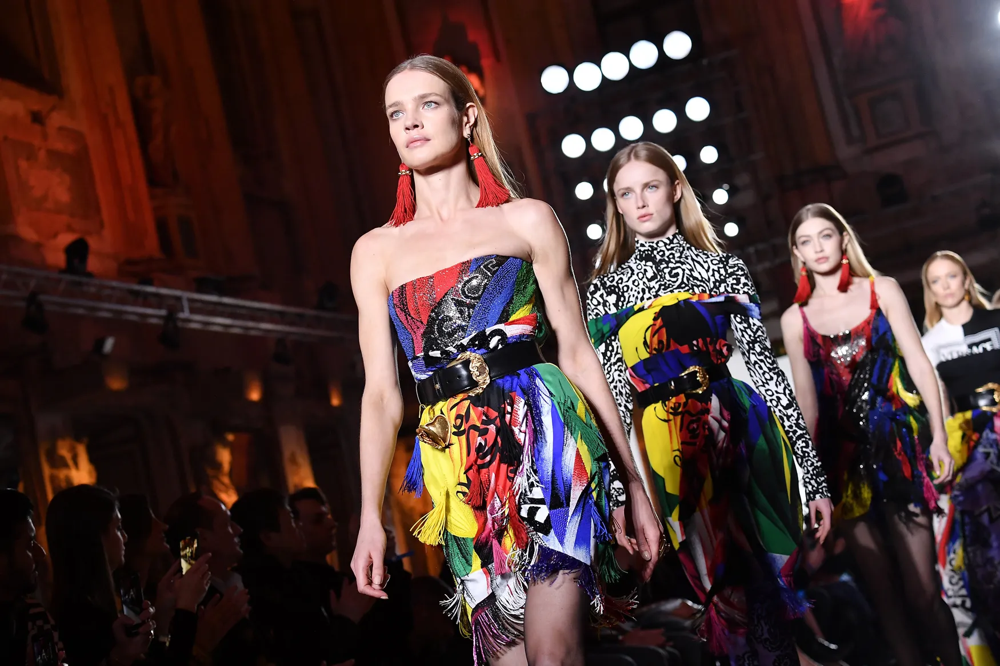
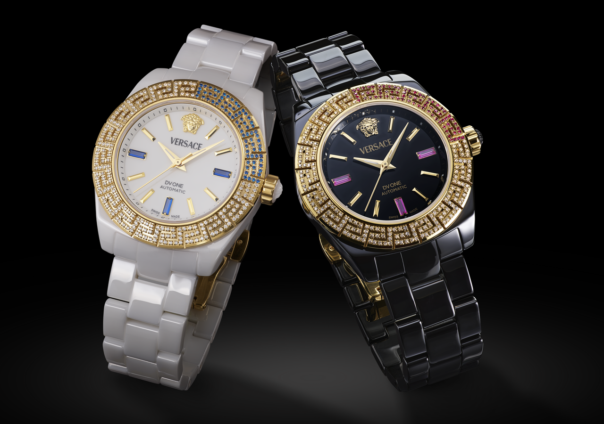
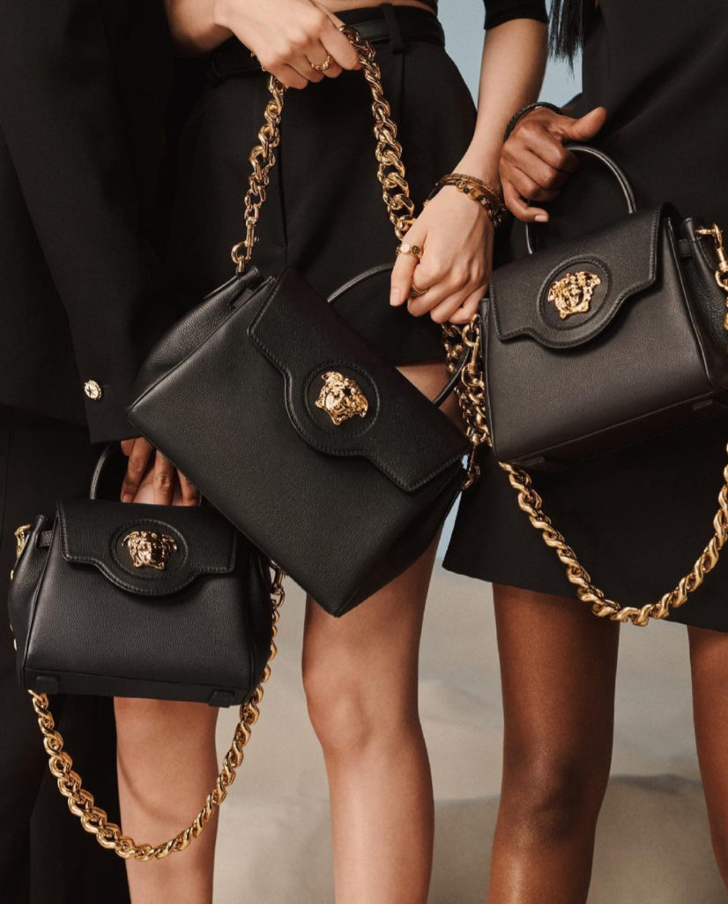

NEW IN
NEW FOR HER
NEW FOR HIM
FALL WINTER COLLECTIONS
SUMMER COLLECTIONS
Style Yourself
Experience Luxury Every Day
Refined Craftsmanship, Unmatched Quality

About Us
A sense of purpose is the rudder that directs a person’s trajectory in life. Some people spend their lives not having one, which often leads to the feeling of being lost, anxious and depressed. Work can only accrue meaning and direction if it has a purpose, especially when it comes to creative endeavours. Fashion is a very competitive industry with a currently low barrier to entry thanks to social media, global logistics infrastructures and dynamic production services. Anyone with a sewing machine or access to materials and machinists will be able to create a few collections for as long as they have the financial means to do so. An industry with a low barrier to entry is littered with businesses that come and go in the blink of an eye. Fashion is no exception. I understand the appeal of fashion as a career choice. In an increasingly lonely, fragmented world that constantly promotes celebrity culture, careers that provide street cred promise to plug any self-esteem holes in our lives. It is no surprise that fashion design is now a popular career option, much like how being a YouTube influencer or a music star has become a dream occupation for many youths. Going to the moon or discovering a cure for cancer is now less appealing than amassing the adoration of strangers.
COLLECTION
Apparel

Upgrade your wardrobe.
Watches
Elegant look on your wrist.
Handbags
Empowering Women, One Bag at a Time.